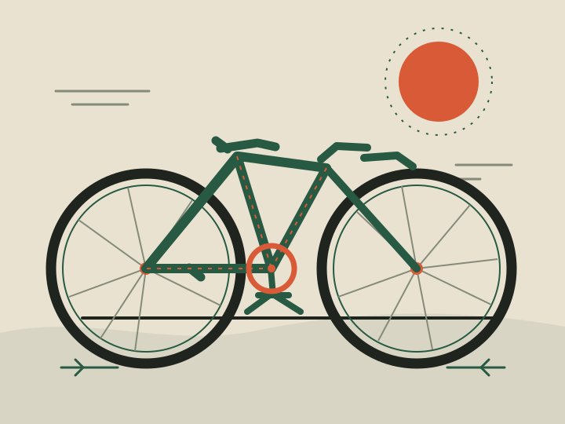

Pakiet warsztatowy
Najczęściej wybieranePrzegląd miejski
Kontrola hamulców, kół i napędu. Regulujemy to, co wymaga uwagi, i oddajemy rower gotowy do codziennych tras.
od 120 zł
Bydgoszcz · serwis bez zadęcia
Mała pracownia, dobre narzędzia i rozmowa o tym, czego naprawdę potrzebuje Twój rower.
Zobacz cennik
01 / Prace w pracowni
Najpierw sprawdzamy, potem ustalamy zakres. Bez wymieniania sprawnych części „na wszelki wypadek”.
Pakiet warsztatowy
Najczęściej wybieraneKontrola hamulców, kół i napędu. Regulujemy to, co wymaga uwagi, i oddajemy rower gotowy do codziennych tras.
od 120 zł
Napęd
Biegi mają wchodzić lekko i bez terkotania. Ustawiamy indeksację, sprawdzamy linki i stan zużycia.
od 80 zł
Koła
Usuwamy bicie, wyrównujemy naciąg szprych i sprawdzamy, czy obręcz znów biegnie prosto.
od 60 zł
02 / Bez niespodzianek
Sprawdź zakres prac przed wizytą — jeśli rower skrywa coś więcej, najpierw zadzwonimy.